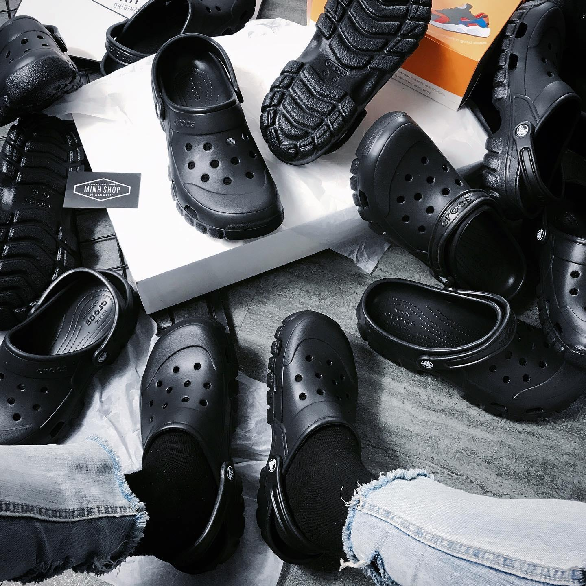
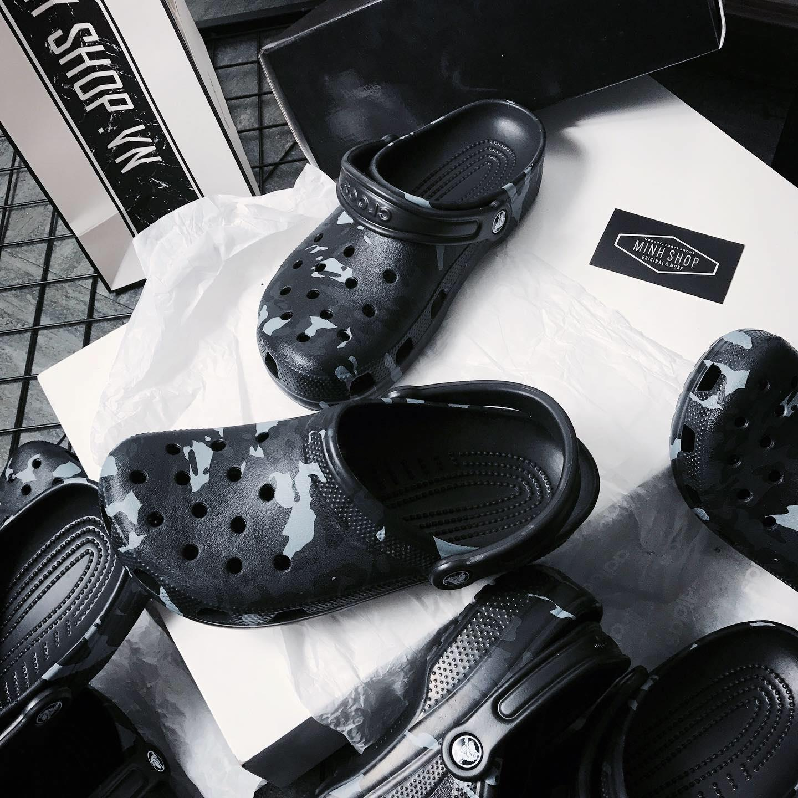
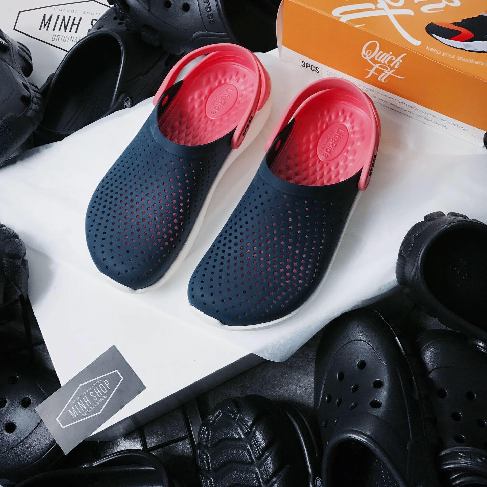
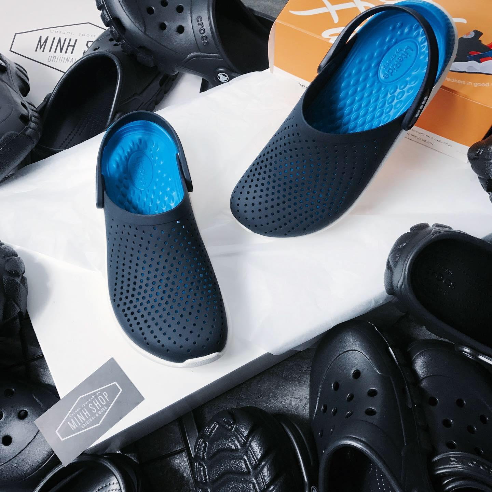

dép Crocs du nhập vào thị trường nếu mình nhớ không lầm thì từ 2006 - 2008, khi mà trào lưu đôi dép này nổi lên, người ta hay gọi đó là đôi dép cá sấu. mà cũng đúng, nó có tên gọi là Crocs, còn có nghĩa là Crocodile: Cá Sấu mà
về thiết kế thì chúng ta sẽ có một đôi dép theo thiết kế như một cái xuồng, phần trên sẽ có nhiều lỗ để thoáng khi, mặt trước của dép cũng thế, thiết kế cong thái học theo chân người mang và cũng sẽ có thêm vài lỗ thông khí nữa để giúp cho chân của bạn luôn thoáng mát với trời nắng, và khô nhanh hơn, không để lại mùi với trời mưa, đặc biệt hơn hết là nó có bộ đế siêu chống trượt, đi mưa ngon lành mà không gặp bất cứt trở ngại nào
nói một chút về chất liệu cấu thành nên dép crocs, với chất liệu được làm từ nhựa thông, có khả năng kháng khuẩn và khử mùi, các nhà khoa học đã phải thí nghiệm loại nhựa thông này trong môi trường chân không, để cho nó có độ bền cao nhất vì bên trong là các phân tử nhựa khép kín với nhau. Loại nhựa này còn được hay sử dụng để bảo vệ các mối nối, chống ăn mòn và oxy hoá theo thời gian
với các sneaker head, theo mình nghĩ thì ai cũng sẽ sở hữu 1 đôi Crocs, ra ngoài café hoặc xem phim trong một buổi chiều mưa nhẹ, lười xách sneaker ra, thì Crocs là một sự lựa chọn hoàn hảo mà bạn có thể thay thế được cho sneaker trong những tình huống như thế này.

Trải qua rất nhiều năm, biến thể của Crocs có rất nhiều, tuy nhiên ở thời điểm 2017 đến hiện tại, người ta vẫn rất ưa chuộng những đôi Crocs được nâng cấp từ phiên bản đầu tiên du nhập về VN từ những năm 2006 - 2008, vừa mang lại 1 sự đơn giản nhưng không kém phần nổi bật, hiệu quả mang lại rất tốt so với mức giá tiền bỏ ra
